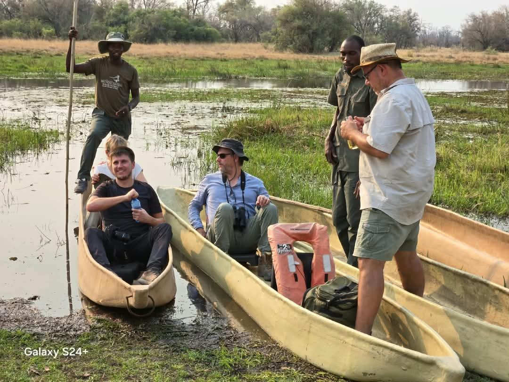
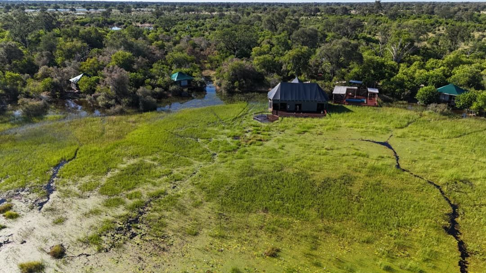
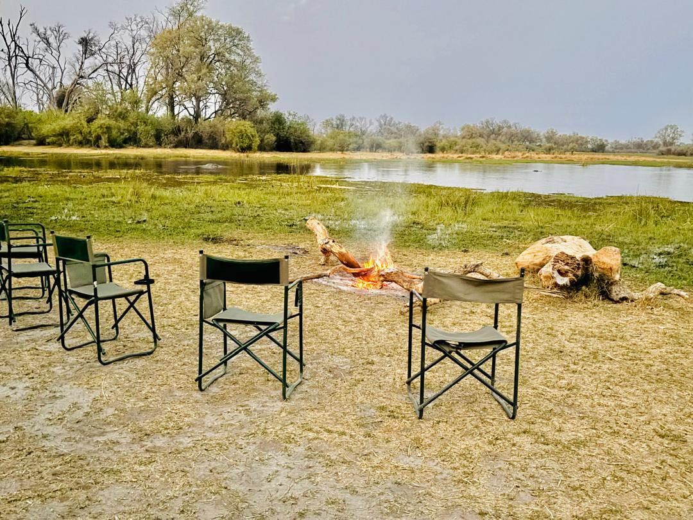
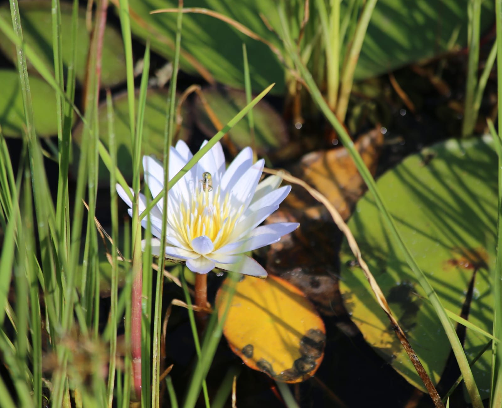

Signature Journey
Gold Safari Package
12 days / 11 nights connecting iconic Botswana and regional stops.
Discover the Gold Safari →Bosele Graduates Adventures creates Botswana journeys for graduates, schools, families, private travellers and independent 4x4 explorers.
Choose a ready-made adventure or let us build something around your people, dates and travel style.
12 days / 11 nights connecting iconic Botswana and regional stops.
Discover the Gold Safari →
Wildlife, accommodation, meals and safari activities in one compact escape.
Explore Khwai →Private, family, school, graduate and self-drive journeys built around the traveller.
See all categories →
We bring together adventure, learning, celebration and Botswana's wilderness in travel experiences designed to feel personal and memorable.
A fast visual preview of the landscapes and experiences behind the packages.




Bosele is open to working with travel agencies, lodges, schools, universities, corporate groups and strategic partners who want to package and distribute Botswana experiences.